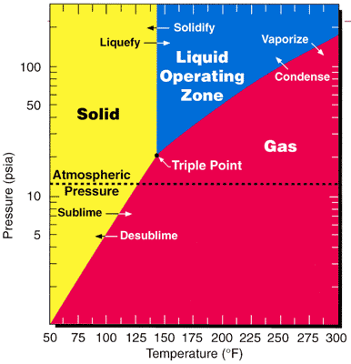
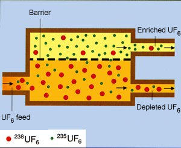
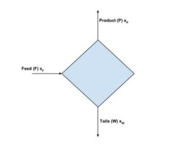

class: center, middle # NE585 ## NUCLEAR FUEL CYCLE ANALYSIS ### Uranium conversion and enrichment ####<div style="text-align: right">3</div> --- # Outcomes for the lecture Chapter 3 Model enrichment processes Demonstrate principles of enrichment and converstion Apply principle of separative work --- # Uranium enrichment derived from WWII Facilities needed to make bombs initially Then used the uranium for submarines (but we can't talk about that) When moving to commercial power, infrastructure already in place Gaseous diffusion first invented at Oak Ridge Needed lots of electricity from TVA Uranium hexafluoride used for enrichment --- # Yellowcake needs to be purified first Impurities are rare earths, chlorine cadmium Uranium readily forms chemical compounds (lots of oxidation states) Can be extracted by organic solvents (like PUREX) Uranium forms complexes that can be precipitated out --- # There are different forms that are mined Forms of $UO_2$ and $UO_3$ $xUO_2 \cdot yUO_3$ $0<y/x<2$ $K_2O \cdot 2UO_3 \cdot V_2O_5 \cdot xH_2O$ $CaO \cdot 2UO_3 \cdot P_2O_5 \cdot xH_2O$ Goal is to get it as $UO_3^{2+}$ and then acid or alkaline leaching $UO_3+2H^+ \rightarrow UO_2^{2+}+H_2O$ $UO_2+2FE^{3+} \rightarrow UO_2^{2+}+2Fe^{2+}$ --- # Acid leaching is like PUREX using organic solvent $UO_2^{2+}+2NO_3+2TBP \rightarrow UO_2(NO_3)_2 \cdot 2TBP$ $UO_2(NO_3)_2+2H_2O_2+H_2O \rightarrow UO_4 \cdot 2H_2O +2HNO_3$ precipitates uranium peroxide $2Na_2S_2O_3+UO_4+H_2O \rightarrow Na_2S_4O_6+UO_3+2NaOH$ Or use ammonium hydroxide $2UO_2^{2+}+6NH_4(OH) \rightarrow (NH_4)_2U_2O_7+4NH_4^++3H_2O$ Then dry and calcine to get $UO_3$ If alkaline leaching is used, recover $U_3O_8 --- # Uranium hexafluoride has favorable properties  Solid at room temperature Easy to handle Relatively low pressure and not too high temperature to sublimate --- # Conversion applies hydrofluor process Crushed $U_3O_8$ and $UO_3$ is reduced by hydrogen to get 'crude' $UO_2$ $U_3O_8+2H_2 \rightarrow 3UO_2+2H_2O$ $UO_3+H_2 \rightarrow UO_2+H_2O$ Then hydrofluorinized (I made that up) $UO_2+4HF \rightarrow UF_4+2H_2O$ $UF_4$ is a solid green salt with a high melting point (1700F) Treated with fluorine gas and distilled $UF_4+F_2 \rightarrow UF_6$ --- # Enrichment based on different diffusion rates Separation factor is defined as $\alpha \equiv \frac{v_5}{v_8}=\sqrt{\frac{m_8}{m_5}}$ Based on kinetic energy of the molecule $kT = \frac{1}{2}mv^2$ This just says lighter molecules move faster $\alpha = 1.004289$ for uranium enrichment Higher value, easier enrichment This isn't that high Low enrichment takes a lot of energy --- # Cascades are designed to enrich  Basic operation is the stage Join stages to form cells Cells form unit Together all that is a cascade --- # Enriching and stripping stages added for efficiency [Sample cascade](http://www.atomicheritage.org/sites/default/files/Gas_Diffusion.gif) Feed enters to A-1 Enriched feed goes through B-2 and depleted through the bottom stage Moving up is higher enrichment --- # Enrichment based on mass conservation  $F=P+W$ $x_FF=x_PP+x_WW$ --- # Enrichment based on mass conservation $x_F$ = weight fraction $^{235}U$ feed into system $x_P$ = weight fraction $^{235}U$ product (enrichment target) $x_W$ = weight fraction $^{235}U$ waste stream (depleted U) F = mass flow rate feed P = mass flow rate product W = mass flow rate waste stream Six equations and two variables --- # Enrichment based on mass conservation $x_F$ fixed at 0.00711 $x_P$ enrichment target $x_w$ 0.002 - 0.003 depends on company (cost) P target mass $\frac{F}{P}=\frac{x_P-x_W}{x_F-x_w}$ Feed factor gives mass of U needed to feed into system for target enrichment Similarly waste factor: $\frac{W}{P}=\frac{x_P-x_F}{x_F-x_W}=\frac{F}{P}-1$ --- # Separative work unit is a measure of 'effort' to enrich SWU proportional to electric energy needed to enrich Measure of cost $SWU=PV(x_P)+WV(x_W)-FV(x_F)$ Separation potential is $V(x_i)=(2x_i-1)ln(\frac{x_i}{1-x_i})$ from thermodynamics Change in entropy when binary mix of perfect gasses is separated --- # Separation potential is a measure of differences in Gibbs free energy [Value function](http://energyfromthorium.com/wp-content/uploads/2010/08/valueFunctionPlot.gif) What does this tell us? Net free energy difference is always positive But individual free energies may change sign as add or subtract from mixture Gibbs free energy is zero at x = 0.5 Minimum work, not actual --- # SWU is normalized to mass of product $\frac{SWU}{P}=V(x_P)+\frac{W}{P}V(x_W)-\frac{F}{P}V(x_F)$ Based on factors computed before --- class: center, middle ## How are tails managed? --- # Only one company enriches by gaseous diffusion United States Enrichment Corporation established in 1992 Energy Policy Act 1998 privatized with an IPO so you can buy stock Operates plant in Paducah up to 5% --- # Enrichment also done by centrifuge